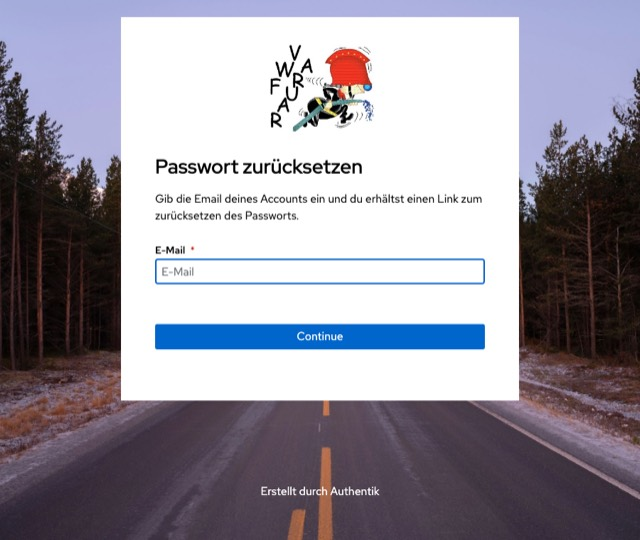

Auch beim ersten Mal
Der Verein hat nie Passwörter verschickt. Wer sich zum ersten Mal anmeldet, hat also gar keines — und geht genau denselben Weg wie jemand, der seines vergessen hat.
Der Knopf heisst zwar Passwort vergessen. Er setzt aber ebenso gut ein erstes. Lass dich davon nicht abhalten: Wenn du noch nie drin warst, ist das hier dein Weg hinein.
Ein Passwort für alles
Für die Website und für die Mitglieder-App gilt dasselbe
Konto. Es liegt bei der Anmeldestelle des Vereins unter
auth.fwv-raura.ch, und dort hängen auch die übrigen
Dienste dran — Nextcloud, das Wiki, das Vorstands-Portal.
Was du hier setzt, gilt also überall. Du musst das nirgends ein zweites Mal machen.
Der Vorstand muss dafür nichts tun. Es gibt zwei Wege, und beide führen zum selben Ergebnis — nimm den, der dir gerade näher liegt.
Der Weg in der App
Der kürzere Weg, wenn du das Telefon ohnehin in der Hand hast: Er bleibt ganz in der App, ein Browser wird nicht gebraucht, und am Ende bist du gleich angemeldet.
- Die Mitglieder-App öffnen. Auf dem Anmeldebildschirm ganz unten steht Passwort vergessen — antippen.
- Die E-Mail-Adresse eingeben, die der Verein von dir hat, und Code anfordern drücken.
- In den Posteingang schauen. In der E-Mail steht ein Zahlencode.
- Zurück in der App: Code eintippen, das neue Passwort zweimal eingeben und bestätigen.
Danach bist du direkt in der App angemeldet — und kannst dich mit demselben Passwort auch auf der Website anmelden.
Der Weg über die Website
Kein Telefon zur Hand, oder du sitzt sowieso am Rechner? Dann geht es über die Anmeldeseite.
- Auf
www.fwv-raura.chauf Mein Bereich klicken. Es erscheint die Anmeldeseite des Vereins. - Ganz unten steht Benutzername oder Passwort vergessen? — anklicken.
- Die E-Mail-Adresse eingeben, die der Verein von dir hat, und Continue drücken.
- In den Posteingang schauen. Der Link in der E-Mail führt auf eine Seite, auf der du ein neues Passwort setzt.
- Mit dem neuen Passwort anmelden — auf der Website wie in der App.
Die Seite lässt sich auch direkt aufrufen:
auth.fwv-raura.ch/if/flow/password-recovery/


Wenn es nicht klappt
Es kommt keine E-Mail
Zuerst im Spam-Ordner nachsehen — Nachrichten von der Anmeldestelle landen dort gern. Warte ausserdem ein paar Minuten; der Versand ist nicht immer sofort.
Kommt danach nichts an, ist unter dieser Adresse vermutlich kein Konto hinterlegt. Häufigster Grund: Der Verein hat eine andere Adresse von dir als die, die du eingegeben hast. Dann hilft der Aktuar weiter.
Der Link aus der Willkommens-E-Mail geht nicht mehr
Solche Links laufen nach einiger Zeit ab — das ist kein Fehler, sondern Absicht. Nimm einfach einen der beiden Wege oben; sie führen zum selben Formular und lassen sich beliebig oft benutzen.
Ich weiss meinen Benutzernamen nicht
Du brauchst ihn nicht. Für das Zurücksetzen genügt die E-Mail-Adresse, und anmelden kannst du dich damit ebenfalls.
Das neue Passwort wird nicht angenommen
Es muss mindestens acht Zeichen haben. Zu einfache Passwörter — der
eigene Name, 12345678 — weist die Anmeldestelle ebenfalls
ab. Ein Satz, den du dir merken kannst, ist die einfachste sichere
Lösung.
Ich komme trotzdem nicht rein
Melde dich beim Aktuar unter aktuar@fwv-raura.ch. Er
kann prüfen, welche Adresse hinterlegt ist, und den Zugang neu
aufsetzen.